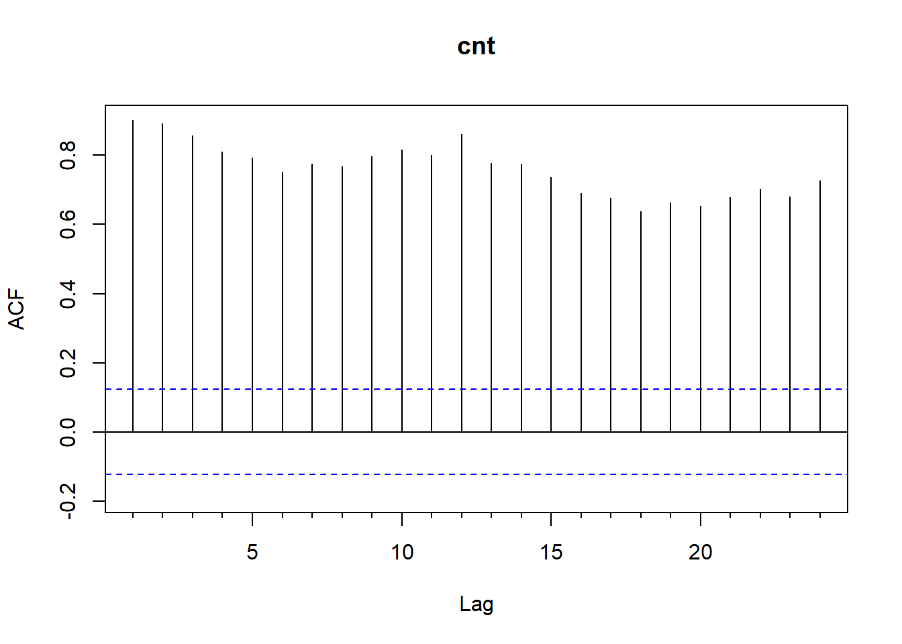
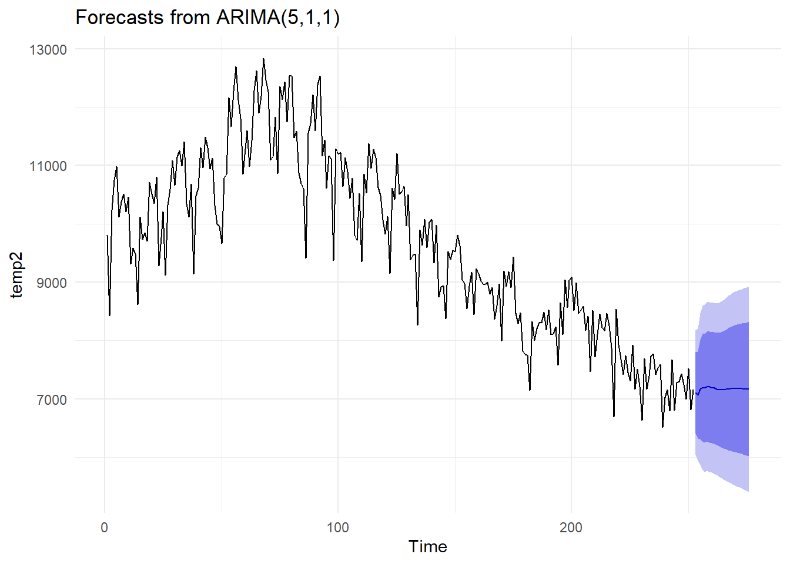
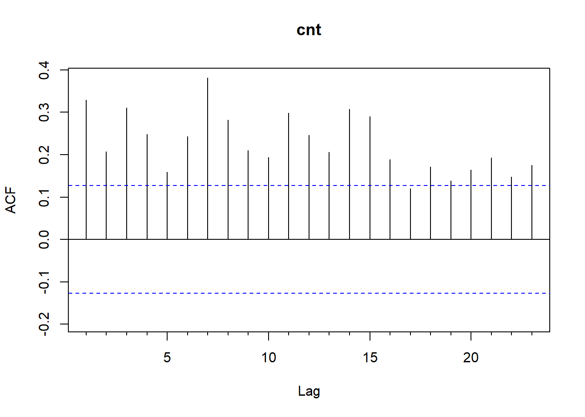
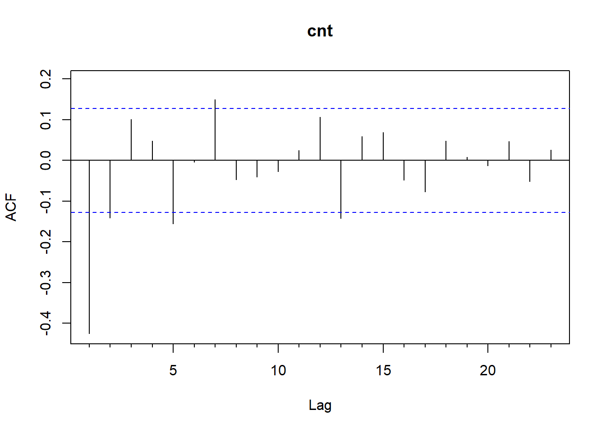
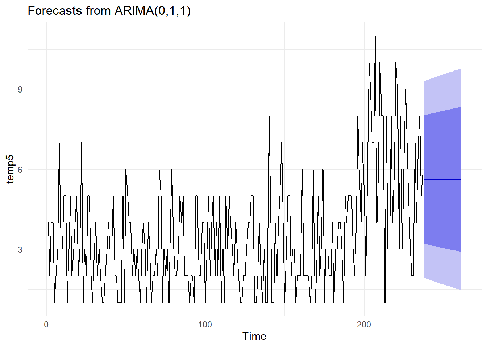
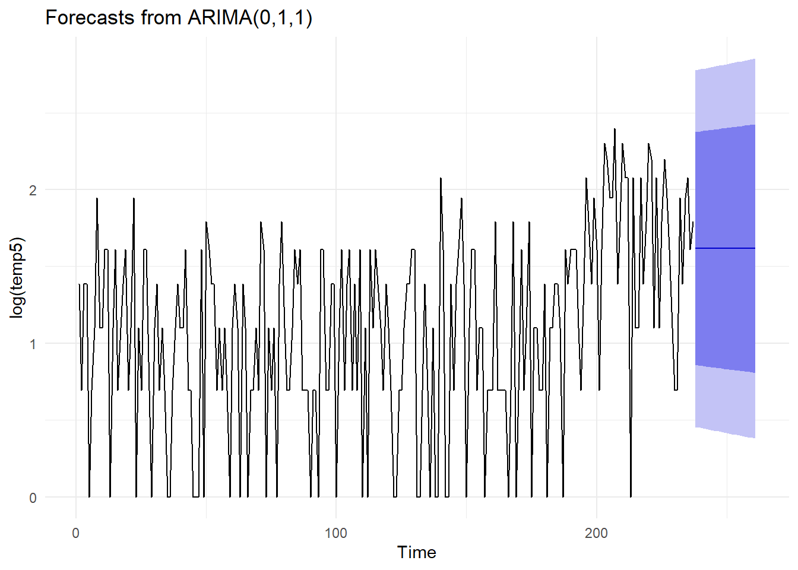
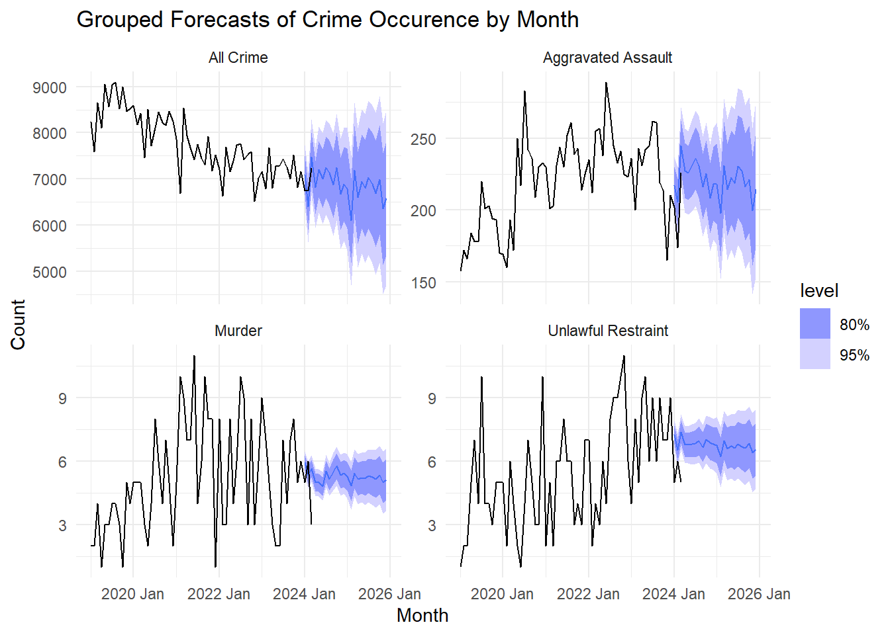
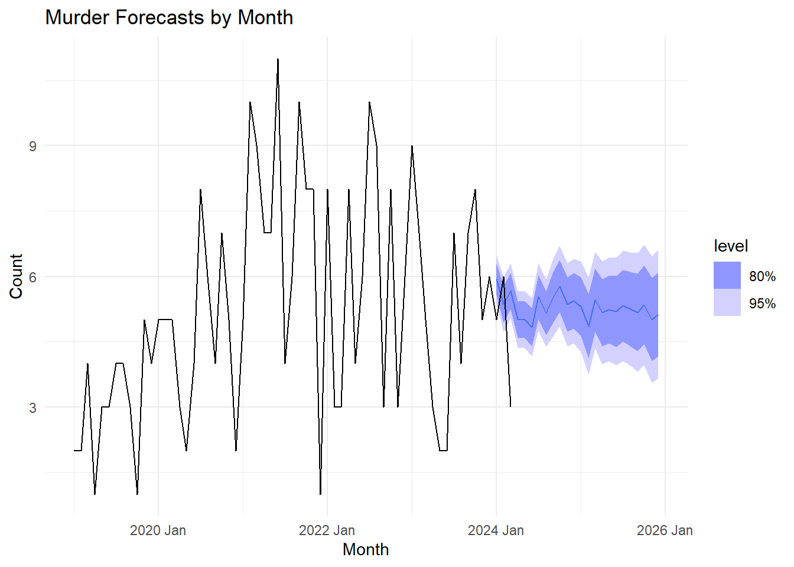
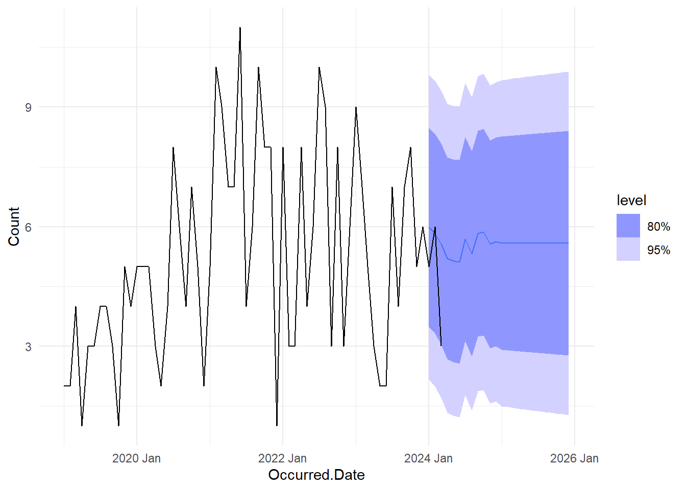
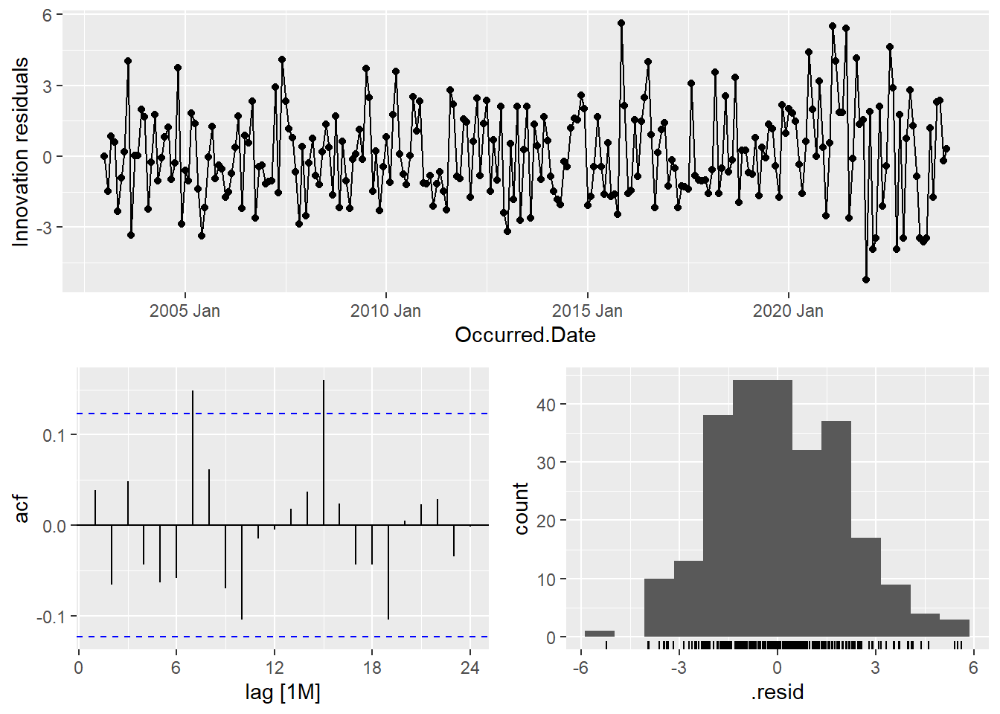

#load needed packages. make sure they are installed.
pacman::p_load(here, knitr, tidyverse, skimr, fpp3, urca, forecast, gt)
theme_set(theme_minimal())Analysis
Setup
d1 <- readRDS(here('HYLTIN-PII-project','data','processed-data','processed-crime.rds'))d1 %>% mutate(Category.Description = if_else(Category.Description == '', 'NA/Unknown', Category.Description)) %>% group_by(Category.Description, Highest.Offense.Description) %>% summarize(cnt = n()) %>% pivot_wider(names_from = Category.Description, values_from = cnt)`summarise()` has grouped output by 'Category.Description'. You can override
using the `.groups` argument.# A tibble: 436 × 9
Highest.Offense.Description `Aggravated Assault` `Auto Theft` Burglary Murder
<chr> <int> <int> <int> <int>
1 AGG ASLT ENHANC STRANGL/SU… 1098 NA NA NA
2 AGG ASLT STRANGLE/SUFFOCATE 7712 NA NA NA
3 AGG ASLT W/MOTOR VEH FAM/D… 772 NA NA NA
4 AGG ASSAULT 18634 NA NA NA
5 AGG ASSAULT BY PUBLIC SERV… 10 NA NA NA
6 AGG ASSAULT FAM/DATE VIOLE… 9603 NA NA NA
7 AGG ASSAULT ON PEACE OFFIC… 70 NA NA NA
8 AGG ASSAULT ON PUBLIC SERV… 329 NA NA NA
9 AGG ASSAULT WITH MOTOR VEH 1823 NA NA NA
10 ARSON WITH BODILY INJURY 15 NA NA NA
# ℹ 426 more rows
# ℹ 4 more variables: `NA/Unknown` <int>, Rape <int>, Robbery <int>,
# Theft <int>temp <- d1 %>%
mutate(Occurred.Date = trunc.Date(Occurred.Date, 'months')) %>%
group_by(Occurred.Date) %>%
summarize(
cnt = n()
) %>% as.data.frame() %>%
filter(year(Occurred.Date) != 2024)
rownames(temp) <- temp$Occurred.Date
temp <- temp %>% select(cnt)
temp2 <- temp %>% as.ts()
Acf(temp2)
Box.test(temp2, lag = 12, type = 'Ljung-Box')
Box-Ljung test
data: temp2
X-squared = 2101.8, df = 12, p-value < 2.2e-16auto.arima(temp2)Series: temp2
ARIMA(5,1,1)
Coefficients:
ar1 ar2 ar3 ar4 ar5 ma1
0.1644 0.3414 0.0846 -0.2550 -0.1711 -0.8042
s.e. 0.0728 0.0650 0.0658 0.0626 0.0666 0.0418
sigma^2 = 295701: log likelihood = -1934.67
AIC=3883.35 AICc=3883.81 BIC=3908.02auto.arima(temp2) %>% forecast(h=24) %>% autoplot()
#temp2 %>% log() %>% diff(12) %>% diff() %>% diff() %>% diff() %>% diff() %>% diff() %>% Acf()temp3 <- d1 %>%
filter(Crime.Category == 'MURDER') %>%
mutate(Occurred.Date = trunc.Date(Occurred.Date, 'months')) %>%
group_by(Occurred.Date) %>%
summarize(
cnt = n()
) %>% as.data.frame() %>%
filter(year(Occurred.Date) < 2024)
rownames(temp3) <- temp3$Occurred.Date
temp3 <- temp3 %>% select(cnt)
temp5 <- temp3 %>% as.ts()
Acf(temp5)
auto.arima(log(temp5))Series: log(temp5)
ARIMA(0,1,1)
Coefficients:
ma1
-0.9234
s.e. 0.0233
sigma^2 = 0.3504: log likelihood = -211.6
AIC=427.2 AICc=427.25 BIC=434.12Box.test(diff(log(temp5)), lag = 4, type = 'Ljung-Box')
Box-Ljung test
data: diff(log(temp5))
X-squared = 51.075, df = 4, p-value = 2.153e-10temp5 %>% log() %>% diff() %>% ur.kpss() %>% summary()
#######################
# KPSS Unit Root Test #
#######################
Test is of type: mu with 4 lags.
Value of test-statistic is: 0.0174
Critical value for a significance level of:
10pct 5pct 2.5pct 1pct
critical values 0.347 0.463 0.574 0.739temp5 %>% log() %>% diff() %>% Acf()
temp5 %>% log() %>% diff() %>% plot()
fit <- Arima(temp5, order = c(0,1,1))
autoplot(forecast(fit, h=24))
fit2 <- Arima(log(temp5), order = c(0,1,1))
autoplot(forecast(fit2, h=24))
fets <- function(x, h) {
forecast(ets(x), h=h)
}
farima <- function(x, h) {
forecast(auto.arima(x), h=h)
}
e1 <- tsCV(log(temp5), fets, h=1)
e2 <- tsCV(log(temp5), farima, h=1)
# MSE comparisons
mean(e1^2, na.rm=TRUE)[1] 0.3646552mean(e2^2, na.rm=TRUE)[1] 0.3675369crime_agg <- d1 %>%
filter(Occurred.Date <= '2024-03-31') %>%
mutate(Occurred.Date = yearmonth(Occurred.Date)) %>%
group_by(Occurred.Date, Crime.Category) %>%
summarize(
cnt = n()
) %>% as.data.frame() %>%
as_tsibble(key = Crime.Category, index = Occurred.Date) %>%
aggregate_key(Crime.Category, Count = sum(cnt)) %>%
fill_gaps(Count = 0) `summarise()` has grouped output by 'Occurred.Date'. You can override using the
`.groups` argument.group_fit <- crime_agg %>%
filter(year(Occurred.Date) < 2024) %>%
model(base = ARIMA(Count)) %>%
reconcile(
td = top_down(base)
)Warning in sqrt(diag(best$var.coef)): NaNs produced
Warning in sqrt(diag(best$var.coef)): NaNs producedgroup_fit# A mable: 34 x 3
# Key: Crime.Category [34]
Crime.Category base
<chr*> <model>
1 ABUSE OF OFFICE <ARIMA(1,1,2)>
2 AGGRAVATED ASSAULT <ARIMA(0,1,3)(0,0,2)[12] w/ drift>
3 ALCOHOL RELATED <ARIMA(1,1,2)(0,0,2)[12]>
4 AUTO THEFT <ARIMA(2,1,0)(0,0,2)[12]>
5 BRIBERY <ARIMA(1,0,0) w/ mean>
6 BURGLARY <ARIMA(0,1,2)(2,0,0)[12]>
7 CRIMINAL CONSPIRACY <ARIMA(1,0,1) w/ mean>
8 CRIMINAL MISCHIEF <ARIMA(0,1,2)(0,0,2)[12]>
9 DISORDERLY CONDUCT <ARIMA(2,1,2)(2,0,0)[12]>
10 DRUG RELATED <ARIMA(0,1,1)(2,0,0)[12]>
# ℹ 24 more rows
# ℹ 1 more variable: td <model>group_fcast <- group_fit %>%
forecast(h = '2 years')
grpPlot <- group_fcast %>%
filter(Crime.Category %in% c('MURDER', 'AGGRAVATED ASSAULT', 'UNLAWFUL RESTRAINT' )| is_aggregated(Crime.Category), .model == 'td') %>%
autoplot(
crime_agg %>% filter(year(Occurred.Date) >= 2019)#, Crime.Category == 'MURDER')
) + facet_wrap(vars(Crime.Category), scales = 'free_y',
labeller = labeller(
Crime.Category = c('<aggregated>' = 'All Crime',
'AGGRAVATED ASSAULT' = 'Aggravated Assault',
'MURDER' = 'Murder',
'UNLAWFUL RESTRAINT' = 'Unlawful Restraint')
)
) +
labs(x = 'Month', y = 'Count', title = 'Grouped Forecasts of Crime Occurence by Month') +
theme(panel.background = element_rect(fill = 'white',
color = 'white'),
plot.background = element_rect(fill = 'white',
color = 'white')
)
murdplot <- group_fcast %>%
filter(Crime.Category %in% c('MURDER'), .model == 'td') %>%
autoplot(
crime_agg %>% filter(year(Occurred.Date) >= 2019, Crime.Category == 'MURDER')
) +
labs(x = 'Month', y = 'Count', title = 'Murder Forecasts by Month') +
theme(panel.background = element_rect(fill = 'white',
color = 'white'),
plot.background = element_rect(fill = 'white',
color = 'white')
)
grpPlot 
murdplot
ggsave(here('HYLTIN-PII-project','results', 'figures', 'static-plots', 'crime-forecast.png'), grpPlot)Saving 7 x 5 in imageggsave(here('HYLTIN-PII-project','results', 'figures', 'static-plots', 'murder-forecast.png'), murdplot)Saving 7 x 5 in imagecrime_agg %>%
filter(year(Occurred.Date) < 2024,Crime.Category == 'MURDER') %>%
model(base = ARIMA(Count))# A mable: 1 x 2
# Key: Crime.Category [1]
Crime.Category base
<chr*> <model>
1 MURDER <ARIMA(0,1,1)(0,0,1)[12]>crime_agg %>%
filter(year(Occurred.Date) < 2024,Crime.Category == 'MURDER') %>%
model(base = ARIMA(Count)) %>% forecast(h = '2 years') %>%
autoplot(crime_agg %>% filter(year(Occurred.Date) >= 2019, Crime.Category == 'MURDER'))
AvF <- d1 %>%
filter(year(Occurred.Date) == 2024, Crime.Category == 'MURDER') %>%
mutate(
Occurred.Date = yearmonth(Occurred.Date)
) %>%
group_by(Occurred.Date) %>%
summarize(
n = n()
) %>% left_join(filter(group_fcast, Crime.Category == 'MURDER' & .model == 'td'), join_by(Occurred.Date == Occurred.Date)) %>%
select(Occurred.Date, n, .mean) %>%
gt() %>%
tab_header(
title = md('**Forecast vs Actual<br>Murder Count**')
) %>%
cols_label(
Occurred.Date = md('**Month**'),
n = md('**Actual**'),
.mean = md('**Forecasted**')
) %>%
fmt_number(columns = .mean, decimals = 1)
AvFForecast vs Actual |
||
|---|---|---|
Month |
Actual |
Forecasted |
| 2024 Jan | 5 | 5.9 |
| 2024 Feb | 6 | 5.4 |
| 2024 Mar | 3 | 5.7 |
| 2024 Apr | 4 | 5.0 |
| 2024 May | 4 | 5.0 |
gtsave(AvF, 'actual-vs-forecast.html', here('HYLTIN-PII-project','results', 'figures', 'static-plots'))theme_set(theme_gray())
aggresid <- group_fit %>% filter(is_aggregated(Crime.Category)) %>% select(td) %>% gg_tsresiduals()
aggresid
ggsave(here('HYLTIN-PII-project','results', 'figures', 'static-plots', 'crime-resid.png'), aggresid)Saving 7 x 5 in imagetheme_set(theme_gray())
murdresid <- group_fit %>% filter(Crime.Category == 'MURDER') %>% select(td) %>% gg_tsresiduals()
murdresid
ggsave(here('HYLTIN-PII-project','results', 'figures', 'static-plots', 'murd-resid.png'), murdresid)Saving 7 x 5 in imagetheme_set(theme_minimal())
agglb <- augment(filter(group_fit, is_aggregated(Crime.Category))) %>%
features(.resid, ljung_box, l = 24) %>% gt()
agglb| Crime.Category | .model | lb_stat | lb_pvalue |
|---|---|---|---|
| <aggregated> | base | 0.01390739 | 0.9061235 |
| <aggregated> | td | 0.01390739 | 0.9061235 |
gtsave(agglb, 'aggregated-ljung.html', here('HYLTIN-PII-project','results', 'figures', 'static-plots'))theme_set(theme_minimal())
murdlb <- augment(filter(group_fit, Crime.Category == 'MURDER')) %>%
features(.resid, ljung_box, l = 24) %>% gt()
murdlb| Crime.Category | .model | lb_stat | lb_pvalue |
|---|---|---|---|
| MURDER | base | 0.3738661 | 0.5409044 |
| MURDER | td | 0.3738661 | 0.5409044 |
gtsave(murdlb, 'murder-ljung.html', here('HYLTIN-PII-project','results', 'figures', 'static-plots'))